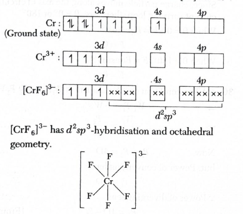
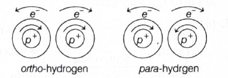
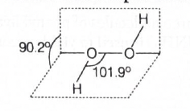
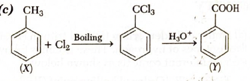
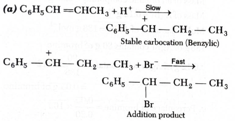
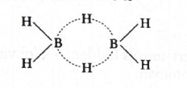
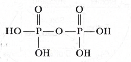

Quick explanation: Protium \((P)\), deuterium
\((D)\), and tritium \((T)\) are isotopes of hydrogen. Their
boiling point and bond energy follow \(T_2 \gt D_2 \gt P_2\),
their bond lengths are almost the same, and their reactivity
with \(Cl_2\) follows \(T_2 \lt D_2 \lt P_2\).
Chapter / topic / subtopic: Hydrogen and
s-Block Elements → Hydrogen and its Compounds Page C97 Hydrogen
→ Isotopes of hydrogen Page C97
The three isotopes of hydrogen are protium \((P)\), deuterium
\((D)\), and tritium \((T)\).
Isotopes have the same atomic number but different mass numbers.
So \(P\), \(D\), and \(T\) show similar chemical behaviour, but
their physical properties differ due to mass difference.
For boiling point, heavier isotopic molecules have slightly
stronger intermolecular attraction. Therefore, \(T_2 \gt D_2 \gt
P_2\).
For bond energy, heavier isotopic molecules show the order \(T_2
\gt D_2 \gt P_2\).
Bond length mainly depends on electronic arrangement. Since
\(P_2\), \(D_2\), and \(T_2\) have the same electronic
structure, their bond lengths are taken as equal: \(T_2 = D_2 =
P_2\).
For reaction with \(Cl_2\), protium reacts fastest and tritium
slowest, so the order is \(T_2 \lt D_2 \lt P_2\).
Final result: All four statements are correct.
Simple memory tip: Heavier isotope usually has
higher boiling point, but lower reaction speed.
Why the other options are wrong: Options
\((a)\), \((b)\), and \((c)\) include only some correct
statements, but the question asks for the correct set and all
four statements are correct.
Exam shortcut: For hydrogen isotopes, remember:
physical mass-dependent properties change, bond length stays
almost same, and reactivity decreases with heavier isotope.
Answer: \((b)\) Proline
Quick explanation: Most amino acids give
purple/violet colour with ninhydrin, but proline gives a yellow
or yellow-orange product. This is because proline is an imino
acid / secondary amine type amino acid.
Chapter / topic / subtopic: Biological,
Industrial and Environmental Chemistry → Biomolecules Page
C221 Amino acids and proteins → Ninhydrin test Page C224
Ninhydrin is commonly used to detect amino acids in paper
chromatography.
Most common amino acids react with ninhydrin to give a purple or
violet colour.
Proline is an exception. It gives a yellow or yellow-orange
colour with ninhydrin.
The reaction can be remembered as: ninhydrin \(+\) proline
\(\rightarrow\) yellow-orange product.
Final result: The amino acid is proline.
Simple memory tip: Proline is special:
ninhydrin gives yellow with proline, purple with most other
amino acids.
Why the other options are wrong: Tryptophan,
alanine, and tyrosine do not give the characteristic yellow
colour asked here; proline is the standard exception.
Answer: \((c)\) In case of liquids, decreases and in case of
gases, increases.
Quick explanation: On increasing temperature,
viscosity of liquids decreases because cohesive forces between
liquid molecules become less effective. But viscosity of gases
increases because gas molecules move faster and transfer
momentum more effectively.
Chapter / topic / subtopic: States of Matter →
Liquid State Page C6 Properties of liquids → Viscosity Page
C6 States of Matter → Gas Laws and Ideal Gas Equation Page
C4
Viscosity means resistance to flow. A highly viscous liquid
flows slowly, like honey or glycerine.
In liquids, viscosity mainly depends on intermolecular cohesive
forces. Stronger attraction between molecules means higher
viscosity.
When temperature increases, liquid molecules get more kinetic
energy and can overcome cohesive forces more easily.
So, liquids flow more easily at higher temperature and their
viscosity decreases.
In gases, viscosity depends mainly on molecular motion and
momentum transfer.
When temperature increases, gas molecules move faster and
collide/transfer momentum more effectively.
Therefore, viscosity of gases increases with increase in
temperature.
Final result: On heating, liquid viscosity
decreases but gas viscosity increases.
Simple memory tip: Heat makes liquids thinner
but gases more momentum-active.
Why the other options are wrong: Both do not
increase and both do not decrease. Liquids and gases show
opposite temperature trends for viscosity.
Exam shortcut: Liquid viscosity \( \downarrow
\) with temperature; gas viscosity \( \uparrow \) with
temperature.
Answer: \((a)\) \(BaCO_3\)
Quick explanation: Thermal stability of
alkaline earth metal carbonates increases down the group. Since
barium is below calcium, strontium, and magnesium, \(BaCO_3\) is
the most thermodynamically stable among the given carbonates.
Chapter / topic / subtopic: Hydrogen and
s-Block Elements → s-Block Elements Page C100 Group 2
Elements Page C103 Chemical Characteristics → Thermal
stability of carbonates Page C103
The given compounds are carbonates of Group 2 metals.
Down Group 2, the size of the metal ion increases.
Larger cations polarise the carbonate ion less strongly, so the
carbonate becomes more stable.
Therefore, the thermal stability of Group 2 carbonates increases
down the group.
The stability order is \(BaCO_3 \gt SrCO_3 \gt CaCO_3 \gt
MgCO_3\).
Among the options, \(BaCO_3\) is therefore the most stable.
Final result: \(BaCO_3\) is thermodynamically
the most stable.
Simple memory tip: Group 2 carbonates become
more stable as you go down the group.
Why the other options are wrong: \(MgCO_3\),
\(CaCO_3\), and \(SrCO_3\) are above barium in Group 2, so their
carbonates are less thermally stable than \(BaCO_3\).
Exam shortcut: For Group 2 carbonate stability,
choose the carbonate of the lowest metal in the group.
Answer: \((a)\) three
Quick explanation: Glucose reacts with three
molecules of phenyl hydrazine to form glucosazone. In osazone
formation, one molecule forms the hydrazone, while the remaining
phenyl hydrazine molecules help in oxidation and final osazone
formation.
Answer: \((a)\) adipic acid and hexamethylene diamine
Quick explanation: Nylon-6,6 is a condensation
polymer formed from adipic acid and hexamethylene diamine. The
numbers \(6,6\) indicate that each monomer contains six carbon
atoms.
Why the other options are wrong:
Tetrafluoroethylene gives Teflon. Vinyl cyanide gives
polyacrylonitrile. Vinyl benzene gives polystyrene.
Exam shortcut: Nylon-6,6 monomers are always
adipic acid and hexamethylene diamine.
Answer: \((c)\) \(d^2sp^3\)
Quick explanation: In \([CrF_6]^{3-}\),
chromium is in \(+3\) oxidation state. \(Cr^{3+}\) has suitable
vacant inner \(3d\), \(4s\), and \(4p\) orbitals for \(d^2sp^3\)
hybridisation, giving octahedral geometry.
Chapter / topic / subtopic: d and f Block
Elements and Coordination Compounds → Coordination Compounds
Page C136 Valence Bond Theory and Hybridisation of
Complexes Page C139 Geometry of coordination compounds Page
C140
First find the oxidation state of chromium in \([CrF_6]^{3-}\).
Fluoride is \(F^-\), so six fluoride ligands contribute total
charge \(-6\).
Let oxidation state of chromium be \(x\). Then \(x - 6 = -3\),
so \(x = +3\).
Therefore, chromium is \(Cr^{3+}\).
The electronic configuration of chromium is \([Ar]3d^5 4s^1\).
For \(Cr^{3+}\), three electrons are removed, giving
\([Ar]3d^3\).
In \([CrF_6]^{3-}\), six ligands require six hybrid orbitals
around chromium.
Six-coordinate complexes generally show octahedral geometry.
The hybridisation used here is \(d^2sp^3\), giving octahedral
shape.

Final result: \([CrF_6]^{3-}\) has \(d^2sp^3\)
hybridisation.
Simple memory tip: Coordination number \(6\)
usually means octahedral; inner orbital octahedral complexes use
\(d^2sp^3\).
Why the other options are wrong: \(sp^3d\) is
for five-coordinate cases. \(sp^3d^2\) is outer orbital
octahedral, but the given solution uses \(d^2sp^3\). \(d^2sp\)
does not give the required six hybrid orbitals.
Exam shortcut: \([CrF_6]^{3-}\) has
coordination number \(6\), so geometry is octahedral; according
to the given VBT treatment, hybridisation is \(d^2sp^3\).
Answer: \((c)\) Both (a) and (b) are correct
Quick explanation: \(OF\) has \(17\) electrons
and one unpaired electron, so it is paramagnetic. Its bond order
is \(1.5\), greater than the bond order of \(F_2\), which is
\(1.0\), so \(OF\) is more stable towards dissociation.
Chapter / topic / subtopic: Periodicity and
Bonding → Molecular Orbital Theory Page C36 Bond order and
magnetic behaviour of molecules Page C36
Compare the two species using total electrons, bond order, and
unpaired electrons.
\(OF\) has \(8 + 9 = 17\) electrons.
\(F_2\) has \(9 + 9 = 18\) electrons.
According to the given solution:
Species
Electrons
Bond order
Unpaired electron
Magnetic nature
\(O-F\)
17
1.5
1
Paramagnetic
\(F_2\)
18
1.0
0
Diamagnetic
A species with unpaired electron is paramagnetic. Therefore,
\(OF\) is paramagnetic.
A species with no unpaired electron is diamagnetic. Therefore,
\(F_2\) is diamagnetic.
Higher bond order means stronger bond and more stability against
dissociation.
Since bond order of \(OF = 1.5\) and bond order of \(F_2 =
1.0\), \(OF\) is more stable towards dissociation than \(F_2\).
Final result: Both statements \((a)\) and
\((b)\) are correct.
Simple memory tip: Unpaired electron means
paramagnetic; higher bond order means stronger bond.
Why the other options are wrong: Options
\((a)\) and \((b)\) are each true, so choosing only one is
incomplete. “None of the above” is incorrect.
Exam shortcut: Odd-electron species like \(OF\)
usually have one unpaired electron; compare bond order to decide
stability.
Answer: \((c)\) identical chemical properties but different
physical properties
Quick explanation: Ortho and para hydrogen
differ in the relative spins of the two hydrogen nuclei. Because
their chemical composition is the same, their chemical
properties are similar, but their physical properties such as
boiling point and thermal conductivity differ.
Chapter / topic / subtopic: Hydrogen and
s-Block Elements → Hydrogen and its Compounds Page C97 Hydrogen
→ Ortho and para hydrogen Page C97
Hydrogen molecule exists in two spin isomeric forms:
ortho-hydrogen and para-hydrogen.
In ortho-hydrogen, the nuclear spins are in the same direction.
In para-hydrogen, the nuclear spins are in opposite directions.
Since both forms are still \(H_2\), their chemical composition
is the same.
Therefore, they show identical chemical properties.
But because their nuclear spin arrangements are different, they
show different physical properties like boiling point and
thermal conductivity.

Final result: Ortho and para hydrogen have
identical chemical properties but different physical properties.
Simple memory tip: Same molecule means same
chemistry; different spins mean different physical properties.
Why the other options are wrong: They do not
correctly separate chemical similarity from physical difference.
Ortho and para hydrogen are not chemically different substances.
Exam shortcut: Ortho/para hydrogen question →
same chemical properties, different physical properties.
Answer: \((d)\) non-planar, non-linear
Quick explanation: Hydrogen peroxide
\((H_2O_2)\) has an open-book type structure. It is not planar
and not linear because of lone pair repulsions around the oxygen
atoms.
Chapter / topic / subtopic: Hydrogen and
s-Block Elements → Hydrogen and its Compounds Page C99 Hydrogen
peroxide → Structure of \(H_2O_2\) Page C99 Periodicity and
Bonding → VSEPR Theory Page C35
\(H_2O_2\) has the structure \(H-O-O-H\).
Each oxygen atom has lone pairs, and these lone pairs cause
repulsions.
Due to these repulsions, the molecule does not remain in a
simple straight line.
It also does not remain fully planar. Instead, it has a twisted
open-book shape.
Therefore, hydrogen peroxide is non-planar and non-linear.

Final result: The structure of \(H_2O_2\) is
non-planar and non-linear.
Simple memory tip: \(H_2O_2\) is like an open
book, not a flat straight line.
Why the other options are wrong: \(H_2O_2\) is
neither linear nor planar, so options with planar or linear
descriptions are incorrect.
Answer: \((a)\) A \(\rightarrow\) 4, B \(\rightarrow\) 3, C
\(\rightarrow\) 2, D \(\rightarrow\) 1
Quick explanation: DDT is a pesticide,
\(NaClO_3\) is used as a herbicide, \(Cl_2\) is a disinfectant,
and PAN is connected with photochemical smog. So the correct
matching is A-4, B-3, C-2, D-1.
Chapter / topic / subtopic: Biological,
Industrial and Environmental Chemistry → Environmental Chemistry
Page C230 Environmental pollution → Photochemical smog Page
C231 Chemistry in everyday life → Disinfectants, pesticides
and herbicides Page C228
DDT is a well-known pesticide. So A matches with 4.
\(NaClO_3\), sodium chlorate, is used as a herbicide. So B
matches with 3.
Chlorine, \(Cl_2\), is commonly used as a disinfectant,
especially for water treatment. So C matches with 2.
PAN stands for peroxyacetyl nitrate, which is an important
component of photochemical smog. So D matches with 1.
Therefore, the correct matching is A \(\rightarrow\) 4, B
\(\rightarrow\) 3, C \(\rightarrow\) 2, D \(\rightarrow\) 1.
Final result: Correct option is \((a)\).
Simple memory tip: DDT kills pests, chlorine
kills germs, PAN belongs to smog.
Why the other options are wrong: They mismatch
standard uses, especially DDT as pesticide, \(Cl_2\) as
disinfectant, and PAN as photochemical smog component.
Exam shortcut: First fix DDT = pesticide and
PAN = photochemical smog; this directly points to option
\((a)\).
Answer: \((d)\) II and III only
Quick explanation: Stronger bond means higher
bond order. In pair II, \(N_2\) has bond order \(3\), while
\(N_2^+\) has \(2.5\). In pair III, \(NO^+\) has bond order
\(3\), while \(NO^-\) has \(2\), so the first species is
stronger in II and III only.
Chapter / topic / subtopic: Periodicity and
Bonding → Molecular Orbital Theory Page C36 Bond order and
bond strength Page C36
The important rule is: larger bond order means stronger bond.
For pair I, \(O_2^{2-}\) has bond order \(1\), while \(O_2\) has
bond order \(2\). So the first species is not stronger.
For pair II, \(N_2\) has bond order \(3\), while \(N_2^+\) has
bond order \(2.5\). So the first species is stronger.
For pair III, \(NO^+\) has bond order \(3\), while \(NO^-\) has
bond order \(2\). So the first species is stronger.
Pair
First species bond order
Second species bond order
Stronger bond in first species?
I. \(O_2^{2-}, O_2\)
1
2
No
II. \(N_2, N_2^+\)
3
2.5
Yes
III. \(NO^+, NO^-\)
3
2
Yes
Therefore, the stronger bond is found in the first species for
II and III only.
Final result: Correct option is \((d)\).
Simple memory tip: Bond order is like bond
strength score: higher score means stronger bond.
Why the other options are wrong: Pair I is
wrong because \(O_2^{2-}\) has lower bond order than \(O_2\). So
any option containing I as correct is not suitable.
Exam shortcut: For MO questions, compare bond
order first. Do not overthink bond length or magnetism unless
the question asks for them.
Answer: \((d)\) All the above are correct statements.
Quick explanation: \([Co(NH_3)_5SO_4]Br\) has
\(Br^-\) outside the coordination sphere, so it gives yellow
precipitate with \(AgNO_3\). Its ionisation isomer is
\([Co(NH_3)_5Br]SO_4\), which has \(SO_4^{2-}\) outside and
gives white precipitate with \(BaCl_2\).
Chapter / topic / subtopic: d and f Block
Elements and Coordination Compounds → Coordination Compounds
Page C136 Isomerism in coordination compounds → Ionisation
isomerism Page C138 Tests for ions in coordination
compounds Page C138
Ionisation isomerism occurs when a ligand inside the
coordination sphere and an ion outside the coordination sphere
exchange places.
In \([Co(NH_3)_5SO_4]Br\), \(SO_4^{2-}\) is inside the
coordination sphere and \(Br^-\) is outside.
Therefore, in solution it can give free \(Br^-\):
\([Co(NH_3)_5SO_4]Br \rightleftharpoons [Co(NH_3)_5SO_4]^+ +
Br^-\)
Free \(Br^-\) gives yellow precipitate with \(AgNO_3\), because
\(AgBr\) is formed.
Its ionisation isomer is \([Co(NH_3)_5Br]SO_4\), where \(Br^-\)
is inside the coordination sphere and \(SO_4^{2-}\) is outside.
In solution, this ionisation isomer gives free \(SO_4^{2-}\):
\([Co(NH_3)_5Br]SO_4 \rightleftharpoons [Co(NH_3)_5Br]^{2+} +
SO_4^{2-}\)
Free \(SO_4^{2-}\) gives white precipitate with \(BaCl_2\),
because \(BaSO_4\) is formed.
Thus, statements \((a)\), \((b)\), and \((c)\) are all correct.
Final result: Correct option is \((d)\).
Simple memory tip: Ion outside the bracket is
free to give the test immediately.
Why the other options are wrong: Options
\((a)\), \((b)\), and \((c)\) are individually correct, but the
best answer is \((d)\), because all statements are correct.
Exam shortcut: In coordination compounds, check
what is outside the square bracket. Outside \(Br^-\) gives
\(AgBr\); outside \(SO_4^{2-}\) gives \(BaSO_4\).
Answer: \((d)\) 96 u
Quick explanation: In \(MS_2\), the mass of
sulphur is \(2 \times 32 = 64\). Given sulphur percentage is
\(40.06\%\), so \(\dfrac{64}{M+64} \times 100 = 40.06\). Solving
gives \(M = 96\ u\).
Chapter / topic / subtopic: States of Matter →
Mole Concept and Stoichiometry Page C3 Determination of
Chemical Formula Page C3 Percentage composition and atomic
mass calculation Page C3
The formula of the metal sulphide is \(MS_2\).
Atomic mass of sulphur is \(32\ u\).
So, mass of two sulphur atoms in \(MS_2 = 2 \times 32 = 64\ u\).
Total formula mass of \(MS_2 = M + 64\).
Given percentage of sulphur is \(40.06\%\).
\(\dfrac{64}{M+64} \times 100 = 40.06\)
\(M + 64 = \dfrac{6400}{40.06}\)
\(M + 64 \approx 160\)
\(M = 160 - 64 = 96\ u\)
Final result: Atomic mass of metal \(M = 96\
u\).
Simple memory tip: In percentage composition
questions, write percentage as \(\dfrac{\text{part
mass}}{\text{total mass}} \times 100\).
Why the other options are wrong: \(160\ u\) is
close to the total formula mass \(M+64\), not the metal mass.
\(64\ u\) is the mass of sulphur part. \(40\ u\) does not
satisfy the given sulphur percentage.
Exam shortcut: For \(MS_2\), sulphur part is
fixed at \(64\). If \(64\) is about \(40\%\) of the compound,
total mass is about \(160\), so metal mass is \(160-64=96\).
Answer: \((c)\) toluene, benzoic acid
Quick explanation: Toluene undergoes side-chain
chlorination with \(Cl_2\) on boiling to form benzotrichloride.
Benzotrichloride on hydrolysis with \(H_3O^+\) gives benzoic
acid.
Chapter / topic / subtopic: Organic Chemistry -
Some Basic Principles, Techniques and Hydrocarbons → Aromatic
Hydrocarbons Page C166 Arenes → Side-chain halogenation of
toluene Page C167 Carboxylic acids → Preparation of benzoic
acid Page C196
Benzotrichloride is \(C_6H_5CCl_3\).
It is formed by exhaustive side-chain chlorination of toluene,
\(C_6H_5CH_3\).
On hydrolysis with \(H_3O^+\), benzotrichloride gives benzoic
acid.
\(C_6H_5CCl_3 \xrightarrow{H_3O^+} C_6H_5COOH\)
Therefore, \(Y\) is benzoic acid.

Final result: \(X =\) toluene and \(Y =\)
benzoic acid.
Simple memory tip: Toluene side chain \(CH_3\)
can be converted to \(CCl_3\), and \(CCl_3\) hydrolyses to
\(COOH\).
Why the other options are wrong: Benzene does
not have the \(CH_3\) side chain needed to form
benzotrichloride. Benzaldehyde is not the final product here
because benzotrichloride hydrolyses to benzoic acid.
Exam shortcut: Benzotrichloride \(+\ H_3O^+\)
means benzoic acid; the starting compound must be toluene.
Answer: \((d)\) more pronounced inert pair effect in lead
has.
Quick explanation: In Group 14, the inert pair
effect becomes stronger down the group. So \(Pb^{2+}\) is more
stable than \(Pb^{4+}\), making \(Pb(IV)\) compounds strong
oxidising agents as they get reduced to \(Pb(II)\).
Chapter / topic / subtopic: p-Block Elements →
Group 14 Elements Page C114 Inert pair effect Page C114 Oxidation
states and stability of \(+2\) and \(+4\) states Page C114
Inert pair effect means the \(ns^2\) electrons of heavier
p-block elements are less available for bonding.
In Group 14, the \(+2\) oxidation state becomes more stable down
the group because the inert pair effect increases.
Lead is a heavier member of Group 14, so inert pair effect is
very pronounced in lead.
Therefore, \(Pb(II)\) is more stable than \(Pb(IV)\).
\(Pb(IV)\) compounds tend to get reduced to the more stable
\(Pb(II)\) state.
A species that gets reduced easily acts as an oxidising agent,
so \(Pb(IV)\) compounds are strong oxidants.
\(Ge(II)\) is less stable compared with higher oxidation state,
so it tends to get oxidised and behaves as a reducing agent.
Final result: The reason is more pronounced
inert pair effect in lead.
Simple memory tip: Down Group 14, \(+2\)
becomes more stable; lead loves \(+2\).
Why the other options are wrong:
Electropositivity, ionisation potential, and ionic radii are not
the direct explanation for the opposite redox behaviour. The key
concept tested is inert pair effect.
Exam shortcut: \(Pb(IV)\) strong oxidant =
wants to become \(Pb(II)\) because of inert pair effect.
Answer: \((b)\) \(Na_2O\)
Quick explanation: In antifluorite structure,
the anions form the lattice and the cations occupy tetrahedral
voids. \(Na_2O\) has the \(A_2B\) type formula and shows
antifluorite structure.
Chapter / topic / subtopic: States of Matter →
Solid State Page C7 Crystal Lattices and Unit Cells Page
C7 Packing in Solids → Voids in solids and antifluorite
structure Page C8
Fluorite structure is shown by compounds like \(CaF_2\), where
cations form the lattice and anions occupy tetrahedral voids.
Antifluorite structure is the reverse arrangement.
In antifluorite structure, anions form the cubic lattice and
cations occupy tetrahedral voids.
The usual formula type for antifluorite structure is \(A_2B\).
\(Na_2O\) fits this \(A_2B\) type formula.
In \(Na_2O\), \(O^{2-}\) ions occupy lattice positions and
\(Na^+\) ions occupy tetrahedral voids.
Final result: \(Na_2O\) has antifluorite
structure.
Why the other options are wrong: \(MnO_4^-\) is
an ion, not an antifluorite lattice compound. \(Na_2O_2\) and
\(Li_2O_2\) are peroxides and do not match the simple oxide
antifluorite structure asked here.
Exam shortcut: Antifluorite example = \(Na_2O\)
or \(Li_2O\).
Answer: \((d)\) 8.87
Quick explanation: At equivalence point, formic
acid is completely converted into sodium formate, a salt of weak
acid and strong base. So the solution is basic, and using \(pH =
7 + \dfrac{pK_a}{2} + \dfrac{\log C}{2}\), the pH is \(8.87\).
Chapter / topic / subtopic: Physical and
Chemical Equilibria → Hydrolysis of Salts Page C58 Acid-base
titration Page C58 pH of salt of weak acid and strong base
Page C58
Formic acid is a weak acid and \(NaOH\) is a strong base.
At the equivalence point, all formic acid gets converted into
sodium formate.
Sodium formate is a salt of weak acid and strong base, so its
solution is basic.
The formula used for pH of salt of weak acid and strong base is:
Simple memory tip: Weak acid + strong base at
equivalence point gives basic pH, greater than \(7\).
Why the other options are wrong: \(7\) would be
for strong acid-strong base neutralisation. \(6\) is acidic,
which is not expected here. \(9.5\) does not match the salt
hydrolysis calculation.
Exam shortcut: At equivalence point of weak
acid with strong base, use salt pH formula and expect pH above
\(7\).
Answer: \((a)\) \(C_6H_5CH(Br)CH_2CH_3\)
Quick explanation: Addition of \(HBr\) to
\(C_6H_5CH=CHCH_3\) occurs through the more stable carbocation.
Protonation gives a benzylic carbocation, which is
resonance-stabilised, and then \(Br^-\) attacks that
carbocation.
Chapter / topic / subtopic: Organic Chemistry -
Some Basic Principles, Techniques and Hydrocarbons → Alkenes
Page C165 Electrophilic addition reactions of alkenes Page
C165 Carbocation stability and Markownikoff addition Page
C165
The alkene is \(C_6H_5CH=CHCH_3\). During electrophilic addition
of \(HBr\), \(H^+\) attacks first.
The direction of addition is decided by the stability of the
carbocation intermediate.
If \(H^+\) adds to the carbon nearer \(CH_3\), the positive
charge comes on the carbon next to the benzene ring.
That carbocation is benzylic:
\(C_6H_5-\overset{+}{CH}-CH_2CH_3\).
Benzylic carbocations are highly stable because the positive
charge is resonance-stabilised by the benzene ring.
Then \(Br^-\) attacks this benzylic carbocation to give
\(C_6H_5CH(Br)CH_2CH_3\).

Final result: The product is
\(C_6H_5CH(Br)CH_2CH_3\).
Simple memory tip: In alkene addition, always
form the more stable carbocation; benzylic carbocation is very
stable.
Why the other options are wrong: Option \((b)\)
would come from the less stable carbocation. Option \((c)\) does
not match addition across this alkene properly. Option \((d)\)
suggests ring bromination, but \(HBr\) adds across the double
bond here.
Exam shortcut: If one possible carbocation is
benzylic, choose the product formed through that carbocation.
Answer: \((b)\) 2
Quick explanation: Diborane, \(B_2H_6\), has
two bridging hydrogen atoms. Each bridge forms one \(B-H-B\)
three-centre two-electron bond, also called a banana bond, so
total \(3C-2e^-\) bonds are two.
Chapter / topic / subtopic: p-Block Elements →
Group 13 Elements Page C109 Boron compounds → Diborane Page
C111 Structure of diborane and banana bonds Page C111
Diborane has the formula \(B_2H_6\).
It contains four terminal \(B-H\) bonds and two bridging
\(B-H-B\) bonds.
The two bridging hydrogen atoms are shared between both boron
atoms.
Each \(B-H-B\) bridge contains three atoms but only two
electrons for bonding.
Such a bond is called a \(3C-2e^-\) bond or banana bond.
Since diborane has two bridging hydrogens, it has two
\(3C-2e^-\) bonds.

Final result: Number of \(3C-2e^-\) bonds in
diborane \(=2\).
Simple memory tip: Diborane has two bridge
hydrogens, so two banana bonds.
Why the other options are wrong: One is too few
because there are two bridges. Three and four count bonds
incorrectly; terminal \(B-H\) bonds are normal two-centre
two-electron bonds, not \(3C-2e^-\) bonds.
Exam shortcut: \(B_2H_6\) structure question →
two bridge bonds → two \(3C-2e^-\) bonds.
Answer: \((c)\) \(750\ K\)
Quick explanation: At equilibrium, \(\Delta G =
0\), so \(T = \dfrac{\Delta H}{\Delta S}\). First calculate
\(\Delta S = 50 - \dfrac{1}{2}(60) - \dfrac{3}{2}(40) = -40\
JK^{-1}mol^{-1}\), then use \(\Delta H=-30000\ J\).
Chapter / topic / subtopic: Thermodynamics →
Second Law of Thermodynamics Page C44 Entropy change Page
C44 Gibbs Free Energy and equilibrium Page C44
For the reaction: \(\dfrac{1}{2}X_2 + \dfrac{3}{2}Y_2
\rightarrow XY_3\)
Entropy change is: \(\Delta S = S(XY_3) - \dfrac{1}{2}S(X_2) -
\dfrac{3}{2}S(Y_2)\)
Substitute the values: \(\Delta S = 50 - \dfrac{1}{2}(60) -
\dfrac{3}{2}(40)\)
\(0 = \Delta H - T\Delta S\), so \(T = \dfrac{\Delta H}{\Delta
S}\).
\(T = \dfrac{-30000}{-40} = 750\ K\)
Final result: Temperature \(=750\ K\).
Simple memory tip: At equilibrium, \(\Delta
G=0\), so \(T=\dfrac{\Delta H}{\Delta S}\).
Why the other options are wrong: They come from
wrong entropy calculation, not converting \(kJ\) to \(J\), or
missing the stoichiometric coefficients \(\dfrac{1}{2}\) and
\(\dfrac{3}{2}\).
Exam shortcut: Always include coefficients
while calculating \(\Delta S\), then match units before using
\(T=\dfrac{\Delta H}{\Delta S}\).
Answer: \((a)\) 4
Quick explanation: Pyrophosphoric acid is
\(H_4P_2O_7\). Its structure has four \(P-OH\) bonds, one
\(P-O-P\) bridge, and two \(P=O\) bonds.
Chapter / topic / subtopic: p-Block Elements →
Group 15 Elements Page C119 Oxoacids of phosphorus Page
C121 Pyrophosphoric acid \((H_4P_2O_7)\) Page C121
Pyrophosphoric acid is formed by condensation of two molecules
of orthophosphoric acid with loss of water.
Its formula is \(H_4P_2O_7\).
The structure contains two phosphorus atoms connected through
one oxygen bridge: \(P-O-P\).
Each phosphorus also has one \(P=O\) bond.
The remaining four hydrogens are present as four \(P-OH\)
groups.
Therefore, total number of \(P-OH\) bonds is \(4\).

Final result: Total \(P-OH\) bonds \(=4\).
Simple memory tip: In \(H_4P_2O_7\), four
hydrogens mean four \(OH\) groups, so four \(P-OH\) bonds.
Why the other options are wrong: \(5\), \(6\),
and \(8\) count other oxygen bonds also. The question asks only
\(P-OH\) bonds, not total \(P-O\) bonds.
Exam shortcut: For phosphorus oxoacids, count
hydrogens attached to oxygen; those give the number of \(P-OH\)
bonds.
Answer: \((d)\) \(Ag\) and \(Fe^{3+}\)
Quick explanation: A redox reaction is feasible
when \(E^\circ_{cell}\) is positive. For \(Ag + Fe^{3+}
\rightarrow Ag^+ + Fe^{2+}\), \(E^\circ_{cell} = -0.80 + 0.77 =
-0.03V\), so the reaction is not feasible.
Chapter / topic / subtopic: Electrochemistry →
Electrochemical Cells Page C68 Electrochemical Series and
EMF of a Galvanic Cell Page C69 Standard electrode
potential and feasibility of redox reactions Page C69
The rule is simple: if \(E^\circ_{cell}\) is positive, the
reaction is feasible. If \(E^\circ_{cell}\) is negative, the
reaction is not feasible.
For option \((a)\), \(Fe^{3+}\) gets reduced and \(I^-\) gets
oxidised:
Since \(E^\circ_{cell}\) is negative, this redox reaction is not
feasible.
Final result: The non-feasible redox pair is
\(Ag\) and \(Fe^{3+}\).
Simple memory tip: Positive cell potential
means reaction can happen; negative cell potential means it
cannot happen spontaneously.
Why the other options are wrong: Options
\((a)\), \((b)\), and \((c)\) all give positive
\(E^\circ_{cell}\), so they are feasible.
Exam shortcut: Reverse the sign for the species
undergoing oxidation, then add the two potentials. Negative
final value means not feasible.
Answer: \((a)\) \(3.6 \times 10^{-5}\ M\)
Quick explanation: \(NH_3\) is a weak base and
\(KOH\) supplies common \(OH^-\) ions. Using \(K_b =
\dfrac{[NH_4^+][OH^-]}{[NH_3]}\), substitute \(K_b = 1.8 \times
10^{-5}\), \([OH^-] = 0.01\), and \([NH_3] = 0.02\).
Chapter / topic / subtopic: Physical and
Chemical Equilibria → Ionic Equilibrium Page C57 Ionization
of weak bases Page C57 Common Ion Effect Page C58
Ammonia behaves as a weak base in water:
\(NH_4OH \rightleftharpoons NH_4^+ + OH^-\)
The base ionisation constant is:
\(K_b = \dfrac{[NH_4^+][OH^-]}{[NH_4OH]}\)
Here, \(NH_3\) or \(NH_4OH\) concentration is \(0.02\ M\).
\(KOH\) is a strong base, so it gives \([OH^-] = 0.01\ M\).
Final result: \([NH_4^+] = 3.6 \times 10^{-5}\
M\).
Simple memory tip: Extra \(OH^-\) from \(KOH\)
suppresses ionisation of \(NH_3\), so use the common-ion value
of \([OH^-]\) directly.
Why the other options are wrong: They come from
either forgetting the common \(OH^-\) ion, using wrong
concentration of \(NH_3\), or rearranging the \(K_b\) expression
incorrectly.
Exam shortcut: For weak base \(+\) strong base
common ion, use \(K_b = \dfrac{\text{salt ion} \times
OH^-}{\text{base}}\) and solve directly.
Answer: \((a)\) \(4R\)
Quick explanation: Compare the given equation
with van't Hoff equation: \(\log_e K = -\dfrac{\Delta
H^\circ}{RT} + \dfrac{\Delta S^\circ}{R}\). The constant term is
\(4.0\), so \(\dfrac{\Delta S^\circ}{R}=4\), hence \(\Delta
S^\circ = 4R\).
Chapter / topic / subtopic: Physical and
Chemical Equilibria → Equilibrium Constant Page C55 Effect
of temperature on equilibrium constant Page C55 Thermodynamics
→ Gibbs Free Energy Page C44
The van't Hoff relation is:
\(\log_e K = -\dfrac{\Delta H^\circ}{RT} + \dfrac{\Delta
S^\circ}{R}\)
Given equation:
\(\log_e K = 4.0 - \dfrac{2000}{T}\)
Rewrite it in comparable form:
\(\log_e K = -\dfrac{2000}{T} + 4.0\)
Now compare the constant term with \(\dfrac{\Delta
S^\circ}{R}\).
\(\dfrac{\Delta S^\circ}{R} = 4\)
Therefore, \(\Delta S^\circ = 4R\).
Final result: \(\Delta S^\circ = 4R\).
Simple memory tip: In \(\log_e K =
-\dfrac{\Delta H^\circ}{RT} + \dfrac{\Delta S^\circ}{R}\), the
constant part gives entropy.
Why the other options are wrong: \(2000\)
belongs to the enthalpy-related part, not the entropy term. The
entropy term is obtained only from the constant \(4.0\).
Exam shortcut: Compare term-by-term:
coefficient of \(\dfrac{1}{T}\) connects to \(\Delta H^\circ\),
constant term connects to \(\Delta S^\circ\).
Answer: \((c)\) \(q = 0,\ \Delta T = 0,\ W = 0\)
Quick explanation: In adiabatic free expansion,
no heat is exchanged, so \(q=0\). Free expansion happens against
vacuum, so \(W=0\). For an ideal gas, internal energy depends
only on temperature, so \(\Delta U=0\) means \(\Delta T=0\).
Chapter / topic / subtopic: Thermodynamics →
Types of Processes Page C42 Internal Energy, Heat and Work
Page C42 First Law of Thermodynamics Page C43
In an adiabatic process, heat exchange is zero.
So, \(q = 0\).
In free expansion, the gas expands into vacuum.
Since external pressure is zero, no external work is done.
So, \(W = 0\).
From the first law of thermodynamics:
\(\Delta U = q + W\)
Substituting \(q=0\) and \(W=0\):
\(\Delta U = 0\)
For an ideal gas, internal energy depends only on temperature.
Since \(\Delta U = 0\), temperature does not change.
Therefore, \(\Delta T = 0\).
Final result: \(q = 0,\ \Delta T = 0,\ W = 0\).
Simple memory tip: Free expansion into vacuum
does no work; adiabatic means no heat; ideal gas then shows no
temperature change.
Why the other options are wrong: Options with
\(q \ne 0\) violate adiabatic condition. Options with \(W \ne
0\) violate free expansion into vacuum. Options with \(\Delta T
\ne 0\) do not apply to ideal gas free expansion.
Answer: \((b)\) For the gas \(B\), \(b=0\) and its dependence
on \(p\) is linear at all pressure.
Quick explanation: At high pressure, real gases
show positive deviation because the volume correction \(b\)
becomes important. The curve \(B\) shows \(Z\) decreasing with
pressure, so saying \(b=0\) and linear dependence at all
pressure is the incorrect statement.
Chapter / topic / subtopic: States of Matter →
Gas Laws and Ideal Gas Equation Page C4 Real gases and
deviation from ideal behaviour Page C4 Compressibility
factor and van der Waals equation Page C5
Compressibility factor is \(Z=\dfrac{pV}{nRT}\).
For an ideal gas, \(Z=1\) at all pressures.
For real gases, \(Z\) may be greater than \(1\) or less than
\(1\), depending on whether repulsive forces or attractive
forces dominate.
Using van der Waals equation:
\(\left(p+\dfrac{a}{V^2}\right)(V-b)=nRT\)
At high pressure, \(V\) becomes small and the volume correction
\(b\) becomes important.
The attraction term \(\dfrac{a}{V^2}\) may be neglected compared
with high pressure \(p\).
Then \(p(V-b)=nRT\).
\(pV-pb=nRT\)
\(\dfrac{pV}{nRT}=1+\dfrac{pb}{nRT}\)
So, \(Z=1+\dfrac{pb}{nRT}\).
This means at high pressure, \(Z\) increases with pressure and
the slope becomes positive.
Therefore, statement \((d)\) is correct.
Statement \((b)\) is incorrect because curve \(B\) shows
decrease in \(Z\) with pressure, and \(b=0\) with linear
dependence at all pressure does not represent this behaviour
correctly.
Final result: The only incorrect statement is
\((b)\).
Simple memory tip: Low pressure attraction can
pull \(Z\) below \(1\); high pressure repulsion pushes \(Z\)
above \(1\).
Why the other options are wrong: Options
\((a)\), \((c)\), and \((d)\) are acceptable statements from the
given graph and real gas behaviour, while \((b)\) contradicts
the expected high-pressure behaviour.
Exam shortcut: For real gases at high pressure,
remember \(Z\) increases because \(b\) dominates.
Answer: \((a)\) \(3s\), \(3p\) and \(3d\)-orbitals all have
the same energy.
Quick explanation: In a hydrogen atom, orbital
energy depends only on the principal quantum number \(n\), not
on \(l\). Since \(3s\), \(3p\), and \(3d\) all have \(n=3\),
they have the same energy.
Chapter / topic / subtopic: Atomic Structure →
Bohr's Model of an Atom Page C20 Atomic Structure → Quantum
Numbers Page C21 Energy of orbitals in hydrogen atom Page
C21
Hydrogen atom is a one-electron species.
In hydrogen and hydrogen-like species, the energy of an orbital
depends only on principal quantum number \(n\).
It does not depend on the azimuthal quantum number \(l\).
\(3s\), \(3p\), and \(3d\) orbitals all belong to the third
shell, so all have \(n=3\).
Therefore, in hydrogen atom, \(3s\), \(3p\), and \(3d\) orbitals
have equal energy.
In multi-electron atoms, this equality breaks because of
shielding and penetration effects, and then energy order becomes
\(3s \lt 3p \lt 3d\).
But the question specifically says hydrogen atom, so all
orbitals with the same \(n\) are degenerate.
Final result: \(3s\), \(3p\), and \(3d\) have
the same energy in hydrogen atom.
Simple memory tip: Hydrogen has one electron,
so energy depends only on \(n\).
Why the other options are wrong: Options
\((b)\), \((c)\), and \((d)\) describe the energy splitting seen
in multi-electron atoms, not in hydrogen atom.
Exam shortcut: Hydrogen atom + same \(n\)
orbitals = same energy.
Answer: \((b)\) all have same hybridisation of centre of
atom
Quick explanation: The central atom in
\(CH_4\), \(NF_3\), \(NH_4^+\), and \(H_2O\) is
\(sp^3\)-hybridised. Their lone pairs, bond pairs, and bond
angles are different, but the hybridisation is the same.
Chapter / topic / subtopic: Periodicity and
Bonding → Shapes of Molecule / VSEPR Theory Page C35 Hybridization
Page C35 Bond pairs and lone pairs around central atom Page
C35
In \(CH_4\), carbon has \(4\) bond pairs and \(0\) lone pairs.
Hybridisation is \(sp^3\).
In \(NF_3\), nitrogen has \(3\) bond pairs and \(1\) lone pair.
Hybridisation is \(sp^3\).
In \(NH_4^+\), nitrogen has \(4\) bond pairs and \(0\) lone
pairs. Hybridisation is \(sp^3\).
In \(H_2O\), oxygen has \(2\) bond pairs and \(2\) lone pairs.
Hybridisation is \(sp^3\).
So, all four species have four electron domains around the
central atom.
Four electron domains correspond to \(sp^3\)-hybridisation.
Their shapes and bond angles are not the same because lone pair
repulsions differ.
Final result: All have the same hybridisation
of central atom, \(sp^3\).
Simple memory tip: Count bond pairs plus lone
pairs; total \(4\) means \(sp^3\).
Why the other options are wrong: Number of lone
pairs is not same, bond angles are not same, and number of bond
pairs is not same.
Exam shortcut: \(CH_4\), \(NH_4^+\),
\(NH_3/NF_3\), and \(H_2O\)-type species all have \(sp^3\)
electron geometry.
Answer: \((d)\) \(25\%\)
Quick explanation: In Carius method, bromine is
estimated as \(AgBr\). Since \(188\ g\) of \(AgBr\) contains
\(80\ g\) bromine, \(0.12\ g\) of \(AgBr\) contains
\(\dfrac{80}{188}\times 0.12 \approx 0.05\ g\) bromine.
Chapter / topic / subtopic: Organic Chemistry -
Some Basic Principles, Techniques and Hydrocarbons → Organic
Chemistry Basics Page C151 Purification and quantitative
analysis of organic compounds Page C152 Carius method for
halogen estimation Page C152
Given mass of organic compound \(=0.20\ g\).
Mass of \(AgBr\) formed \(=0.12\ g\).
Molar mass of \(AgBr = 108 + 80 = 188\ g\ mol^{-1}\).
\(188\ g\) of \(AgBr\) contains \(80\ g\) of bromine.
Therefore, \(0.12\ g\) of \(AgBr\) contains bromine:
\(\dfrac{80}{188}\times 0.12 = 0.05\ g\)
Percentage of bromine:
\(\dfrac{0.05}{0.20}\times 100 = 25\%\)
Final result: Percentage of bromine \(=25\%\).
Simple memory tip: In Carius halogen
estimation, convert silver halide mass into halogen mass first.
Why the other options are wrong: They come from
using the full mass of \(AgBr\) directly as bromine mass or from
using wrong molar mass values.
Exam shortcut: For bromine from \(AgBr\),
bromine fraction \(=\dfrac{80}{188}\). Multiply this by \(AgBr\)
mass, then divide by sample mass.